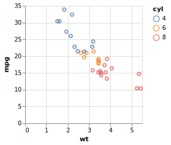

The goal of vegawidget is to render Vega-Lite and Vega specifications as htmlwidgets, and to provide you a means to communicate with a Vega chart using JavaScript or Shiny. Its ambition is to be a low-level interface to the Vega(-Lite) API, such that other packages can build upon it to offer higher-level functions to compose Vega(-Lite) specifications.
This is the key difference with the vegalite package: it provides a set of higher-level functions to compose specifications, whereas vegawidget concerns itself mainly with the rendering of the htmlwidget.
To be clear, although Vega-Lite offers a grammar-of-graphics, this package does not offer a user-friendly framework to compose graphics, like those provided by ggplot2 or ggvis. However, this package may be useful to:
- build re-usable Vega and Vega-Lite specifications for deployment elsewhere, if you can tolerate the frustration of building specifications using lists.
- develop higher-level, user-friendly packages to build specific types of plots, or even to build a general ggplot2-like framework, using this package as a foundation (or inspiration).
Features
New to vegawidget 0.3
- vegawidget offers Vega-Lite 4.0.2 and Vega 5.9.0. Consequently, this package works only with browsers that support ES6. This includes all modern browsers and the 1.2 version of the RStudio IDE.
New to vegawidget 0.2
-
When knitting to a non-HTML format, e.g.
github_document, this package provides aknit_print()function that will intercept the normal renderer, using instead its own renderer, allowing you to specify"png","svg"or"pdf". It requires that nodejs be installed on your system, as well as the R packages rsvg and png. MacOS users will require an X11 system, such as XQuartz, to be installed.For an example, see the GitHub rendering of this README file. For more details, please see the Render Using Vegawidget article.
For interactive applications, there are now functions to support vega-view’s
addDataListener()function:vw_add_data_listener(), andvw_shiny_get_data().
Installation
You can install vegawidget from CRAN with:
install.packages("vegawidget")The development version of vegawidget is available from GitHub with:
# install.packages("devtools")
devtools::install_github("vegawidget/vegawidget")Note: There are documentation websites for both the CRAN version and the development version of this package.
Introduction
Vega(-Lite) specifications are just text, formatted as JSON. However, in R, we can use lists to build specifications:
library("vegawidget")
spec_mtcars <-
list(
`$schema` = vega_schema(), # specifies Vega-Lite
description = "An mtcars example.",
data = list(values = mtcars),
mark = "point",
encoding = list(
x = list(field = "wt", type = "quantitative"),
y = list(field = "mpg", type = "quantitative"),
color = list(field = "cyl", type = "nominal")
)
) %>%
as_vegaspec()The as_vegaspec() function is used to turn the list into a vegaspec; many of this package’s functions are built to support, and render, vegaspecs:
spec_mtcars
The rendering of the chart above depends on where you are reading it:
On this package’s pkgdown site, it is rendered as part of an HTML environment, showing its full capabilities.
At its GitHub code site, the chart is further rendered to a static SVG file, then incorporated into the Markdown rendering.
For more, please see our Getting Started article. For other introductory material, please see:
- Vega-Lite website has a comprehensive introduction
- An interactive learnr tutorial at shinyapps.io
Other articles for this package:
- Specify using vegaspec: how to construct and render a vegaspec.
- Render using vegawidget: advanced rendering options.
- Extend using Shiny: how to interact with Vega charts using Shiny.
- Extend using JavaScript: how to interact with Vega charts using JavaScript.
- Create Images: how to create and save PNG or SVG images.
- Work with Dates and Times: dates and times in Vega(-Lite) work a little differently from R.
- Import into Other Packages: how to import vegawidget functions into your package, then re-export them.
Acknowledgements
- Alicia Schep has been instrumental in guiding the evolution of the API, and for introducing new features, particularly the JavaScript and Shiny functions.
- Haley Jeppson and Stuart Lee have provided valuable feedback and contributions throughout the package’s development.
- Bob Rudis and the vegalite package provided a lot of the inspiration for this work, providing a high-level interface to Vega-Lite.
- The Altair developers, for further popularizing the notion of using a programming language (Python) to create and render Vega-Lite specifications.
- The Vega-Lite developers, for providing a foundation upon which the rest of this is built.
Contributing
Contributions are welcome, please see this guide. Please note that this project is released with a Contributor Code of Conduct. By participating in this project you agree to abide by its terms.